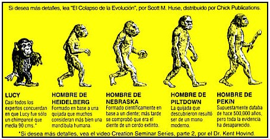
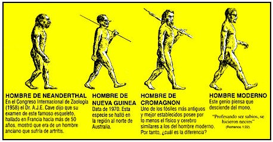

“Si Dios hizo cada una de la media docena de especies humanas descubiertas en las rocas antiguas, ¿Por qué él creó una secuencia temporal continua de rasgos progresivamente más modernos: incremento en la capacidad craneal, huesos y cara reducida, tamaño de cuerpo más acomodado? ¿Acaso creó imitando la evolución y probar así nuestra fe?”
—Stephen Jay Gould.
Cuando Charles Darwin escribió sobre los orígenes humanos supuso que en África se encontrarían los restos de nuestros más remotos ancestros. Hoy la predicción se ha cumplido, cientos de restos fósiles provenientes de Etiopía, Sudáfrica, Kenya, Tanzania etc., atestiguan la existencia de criaturas bípedas que gradualmente modificaron la morfología de sus caninos y el tamaño de su cerebro.
La explicación racionalista de los orígenes humanos está firmemente documentada. Si bien es cierto que entre los paleontólogos existe debate por algunos detalles (por ejemplo, ¿fue Sahelanthropus tchadensis miembro del linaje que llevó a los humanos?) ningún biólogo serio pone en duda el hecho de la evolución.
Sin embargo, para el público general esto no resulta igual de claro. A parte de la mal comprensión pública de la ciencia se suma el esfuerzo deshonesto de los creacionistas, los cuales han emprendido una campaña para desacreditar la biología evolutiva, y hacer que en las clases de ciencias en los EEUU se presente como alternativa a la evolución un programa pseudocientífico llamado creacionismo científico (su forma más moderna la denominan “diseño inteligente”).
Las publicaciones creacionistas contribuyen a la desinformación y confusión del público. En tales publicaciones se hace notable el uso de medias verdades y mentiras descaradas que tienen como fin confundir al lector y crearles la falsa impresión que las pruebas existentes del hecho evolutivo son poco concluyentes.
El presente escrito tiene como propósito analizar algunos de los argumentos que presentan los evangélicos sobre la evolución humana, en especial aquellos que son de amplia difusión en el mundo religioso fundamentalista. Para tal fin se ha revisado dos publicaciones creacionistas. La primera es un folleto que lleva por título “¿Abuelito?” el cual es publicado por CHICK PUBLICATIONS. La segunda publicación es un libro titulado “En busca de los orígenes ¿Evolución o creación?” escrito por Jean Flori y Henry Rasolofomasoandro y editado por la editorial española Safeliz. La primera publicación es distribuida por las iglesias evangélicas y la segunda lo es por parte de la Iglesia Adventista del Séptimo Día. Es lamentable saber que cientos de niños y jóvenes reciben este tipo de lecturas que favorecen el analfabetismo científico en nuestra sociedad.
En la portada del folleto de CHICK PUBLICATIONS se puede ver la caricatura de un gorila comiendo una banana, junto al título “¿Abuelito?” lo que plantea de entrada la idea, errónea por demás, que los antropoides actuales son los ancestros de los humanos. Aquí una reproducción de su portada.

La lista de mentiras y verdades a medias involucran a unas pocas especies de fósiles bien conocidos por los paleontólogos. Es interesante encontrar que los principales caballitos de batalla de los creacionistas son el Hombre de Nebraska y el Hombre de Piltdown. El primero fue una especie que nunca tuvo reconocimiento oficial, y la segunda una falsificación que fue puesta en evidencia por los mismos científicos y que en la actualidad no tiene cabida dentro de los árboles genealógicos de la humanidad. Cabe mencionar que muchas especies fósiles de las que se posee muy buen material no se mencionan para nada, siendo así su análisis sesgado y tendencioso.
A continuación se mostrará el ataque creacionista de CHICK PUBLICATIONS a la evolución humana, seguido a esto encontrará los enlaces al análisis de los argumentos antievolucionistas.
Para acceder al análisis de los argumentos creacionistas haga clic en los enlaces que se encuentran a continuación:
Mentiras de los creacionistas sobre Lucy (Australopithecus afarensis)
Medias verdades de los creacionistas sobre el Hombre de Nebraska
Medias verdades de los creacionistas sobre el Hombre de Piltdown
Mentiras de los creacionistas sobre el Hombre de Pekín (Homo erectus)
Medias verdades de los creacionistas sobre el Hombre de Neandertal
Medias verdades de los creacionistas sobre el Hombre de Cromagnon
Volver a la sección Ciencias de los orígenes
Comentarios
Comments powered by Disqus